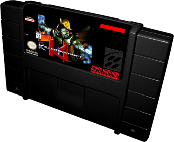
Killer Instinct
A única fita de SNES com carcaça preta no lugar do cinza padrão. Saiu em 1995 com um CD de trilhas sonoras e é a peça mais procurada de quem quer uma fita diferente na estante.
16 bits · 1991
O console que trouxe aventura, jogos de plataforma e uma geração de jogos para casa.
Explorar as fitas →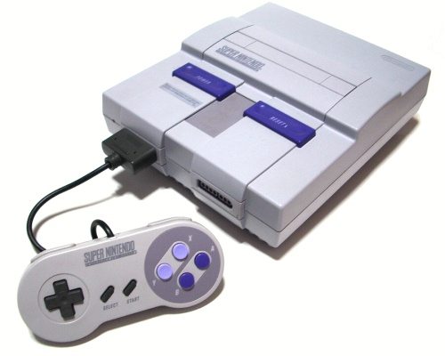
O console
O Super Nintendo Entertainment System chegou em 1991 com um hardware 16-bit, gráficos mais detalhados e uma biblioteca que definiu uma geração de jogos para console.
As fitas
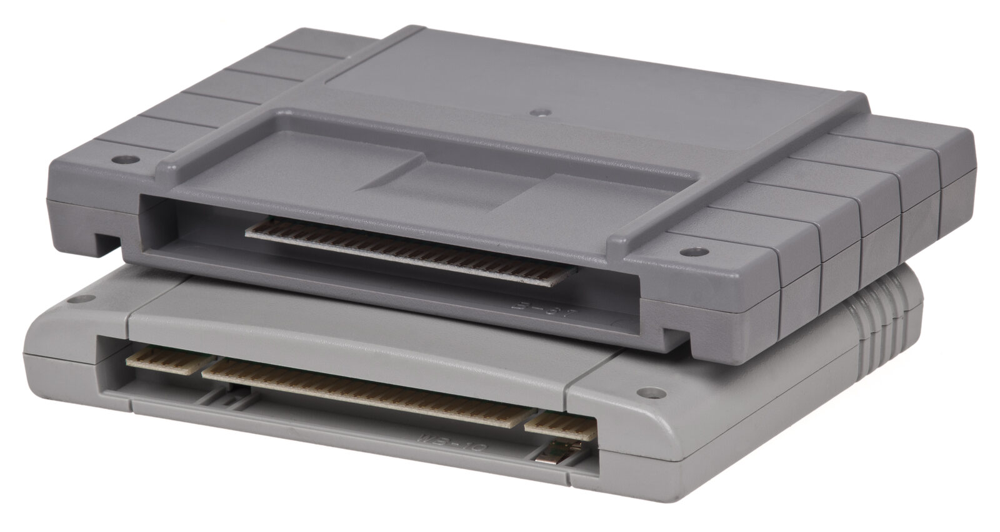
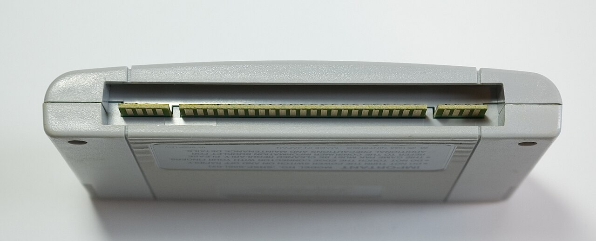
Cada fita guardava um jogo inteiro. O plástico cinza virou parte da memória afetiva dos jogadores.
Curiosidades de colecionador
Peças fora do comum: nada de fitas comuns aqui, só o tipo de item que faz a caça ao tesouro valer a pena.

A única fita de SNES com carcaça preta no lugar do cinza padrão. Saiu em 1995 com um CD de trilhas sonoras e é a peça mais procurada de quem quer uma fita diferente na estante.
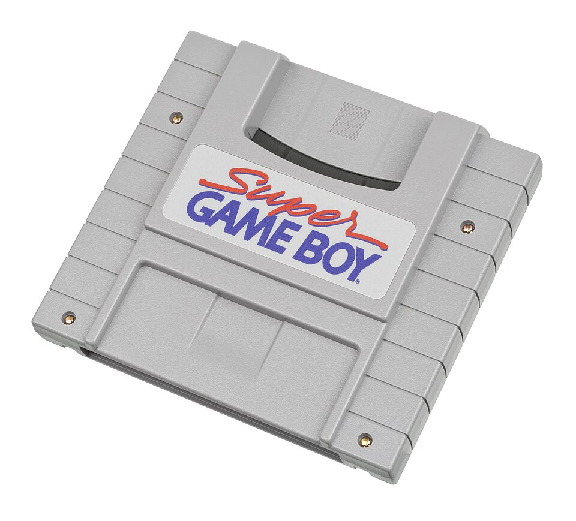
Não é jogo: é um adaptador que encaixa no console para rodar as fitas de Game Boy na TV, com borda e cores desenhadas para a tela grande.
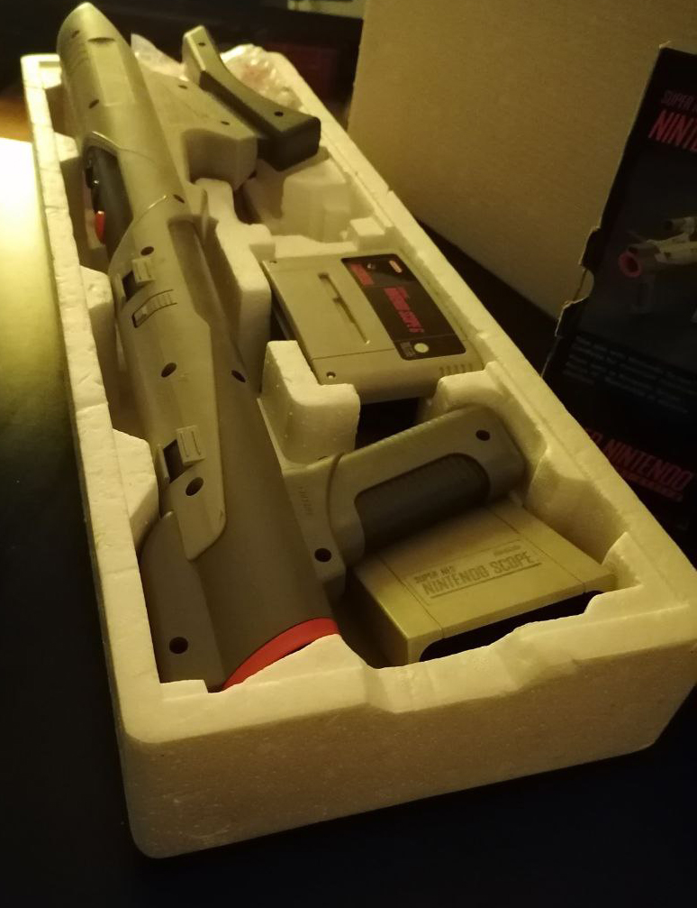
O canhão infravermelho de 1992: pesado, com sensor, pilhas e um jogo de fliperama acoplado. Vende pouco e virou item raro de colecionador.
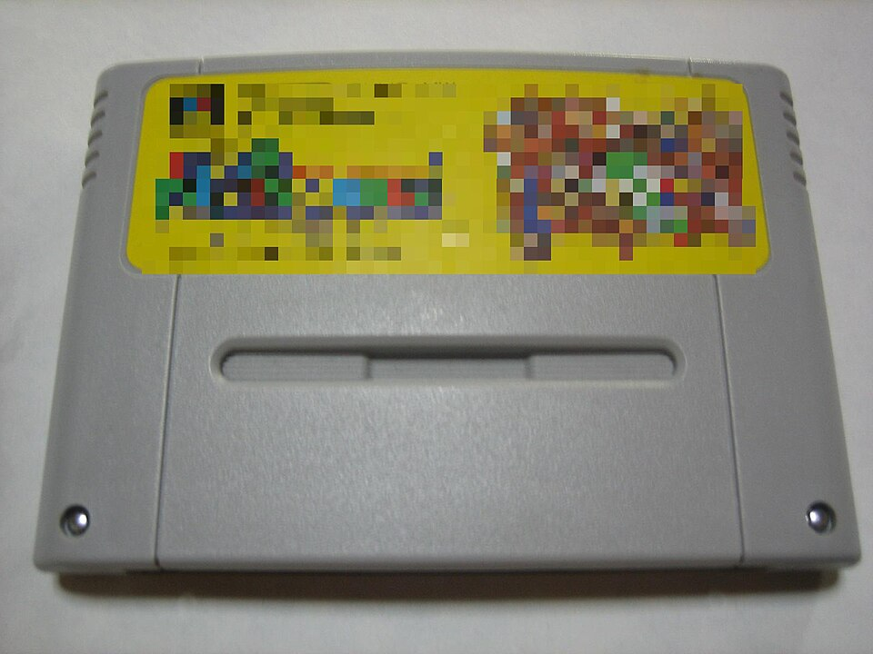
No Japão o Super Famicom usou fitas menores, que não encaixam no SNES americano. A etiqueta é diferente das ocidentais e cada uma vira uma descoberta.
Jogos
Estes são os campeões de vendas do Super Nintendo. Veja a fita, uma imagem do jogo e quantas cópias cada um vendeu no mundo.
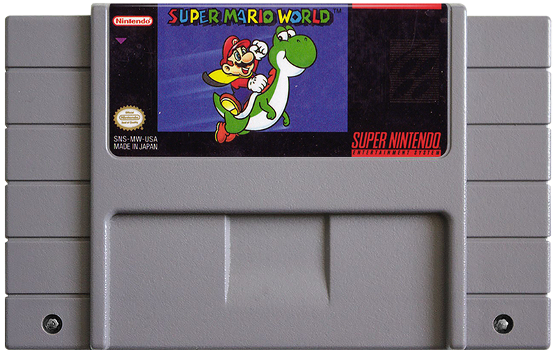
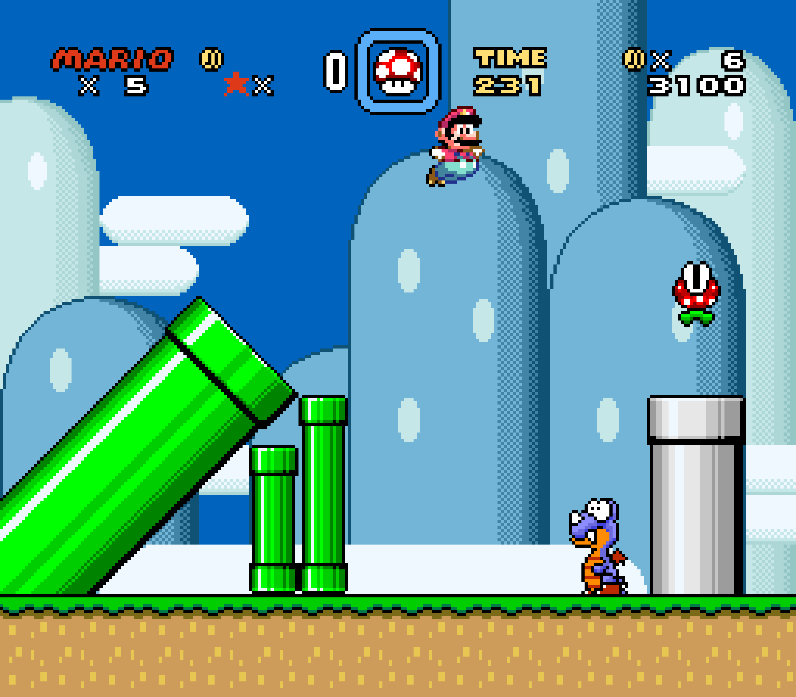
1990 · Plataforma · 20,61 milhões
1º lugar: o jogo que mais vendeu no Super Nintendo, com mais de 20 milhões de cópias — quase sempre dentro da caixa junto com o console.
Mario e Yoshi exploram um mapa gigante com fases secretas, saídas escondidas e animais para montar. É a referência de plataforma da Nintendo.
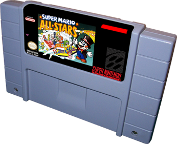
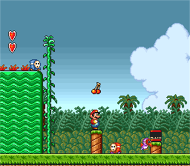
1993 · Compilação · 10,55 milhões
2º lugar: mais de 10 milhões de cópias vendidas. É uma coletânea com quatro clássicos de 8 bits refeitos em 16 bits, tudo em uma fita só.
Super Mario Bros., The Lost Levels, Super Mario Bros. 2 e Super Mario Bros. 3, com gráficos, trilha e menu novos e senha para salvar o jogo.
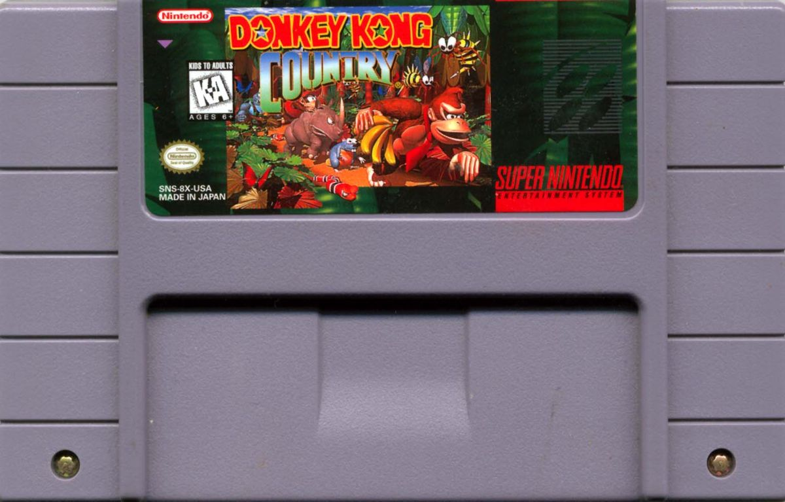
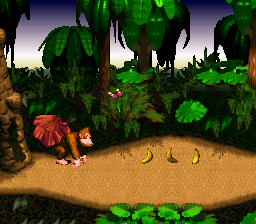
1994 · Plataforma · 9,30 milhões
3º lugar: 9,3 milhões de cópias, sendo 6,1 milhões vendidas só nos últimos 45 dias de 1994 — recorde de vendas rápidas da época.
Donkey Kong e Diddy Kong atravessam cavernas e fases de gelo com gráficos pré-renderizados em Silicon Graphics, trilha sonora marcante e jogo em dupla.